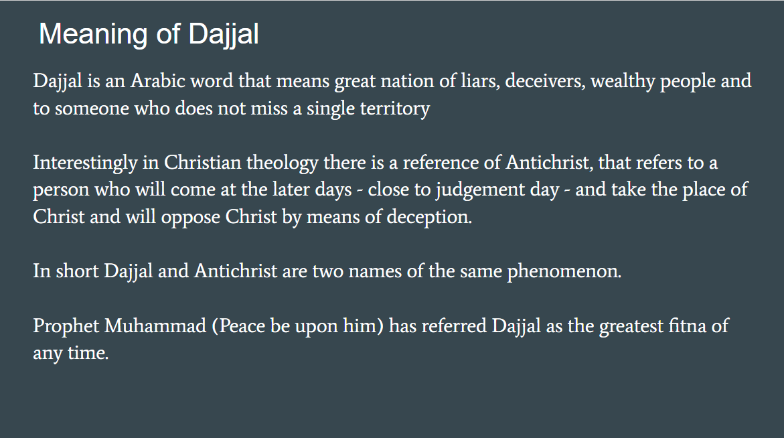
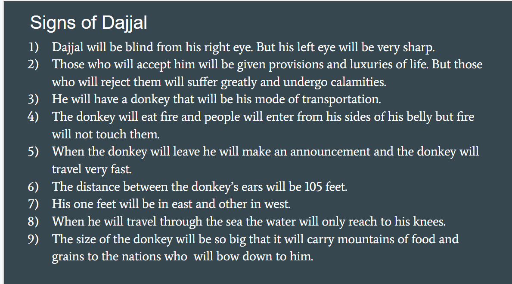
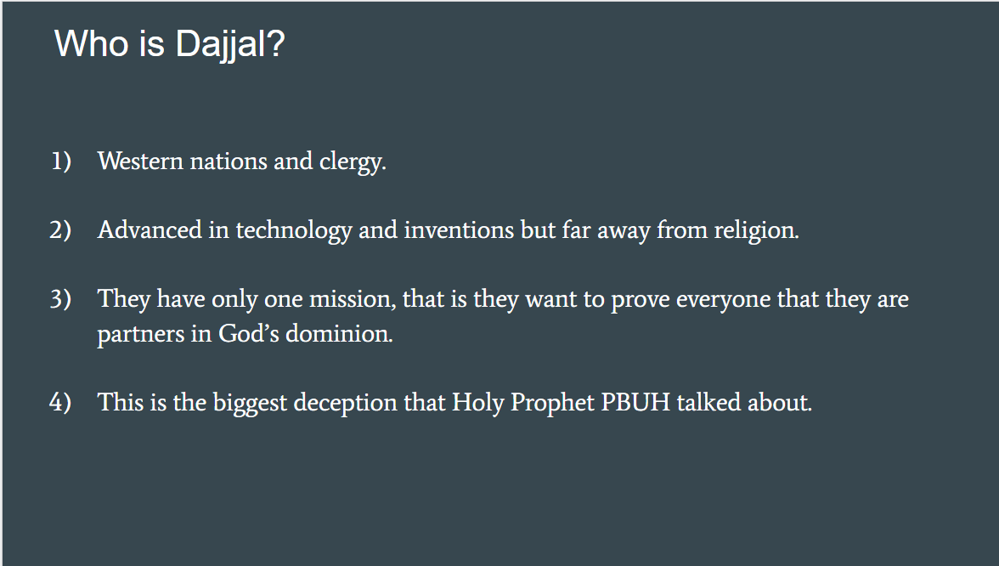

1 / 4

Dajal or The Antichrist
2 / 4

Meaning Of Dajal
3 / 4

Signs Of Dajal
4 / 4

Who Is Dajal
Dajjal is an Arabic word that means great nation of liars, deceivers, wealthy people and to someone who does not miss a single territory.
Interestingly in Christian theology there is a reference of Antichrist, that refers to a person who will come at the later days, close to judgement day and take the place of Christ and will oppose Christ by means of deception,
in short Dajjal and Antichrist are two names of the same phenomenon.
Prophet Muhammad (Peace be upon him) has referred Dajjal as the greatest fitna of any time.
1) Dajjal will be blind from his right eye. But his left eye will be very sharp.
2) Those who will accept him will be given provisions and luxuries of life. But those who will reject them will suffer greatly and undergo calamities.
3) He will have a donkey that will be his mode of transportation.
4) The donkey will eat fire and people will enter from his sides of his belly but fire will not touch them.
5) When the donkey will leave he will make an announcement and the donkey will travel very fast.
6) The distance between the donkey’s ears will be 105 feet.
7) His one feet will be in east and other in west.
8)When he will travel through the sea the water will only reach to his knees.
9) The size of the donkey will be so big that it will carry mountains of food and grains to the nations who will bow down to him.
-Western nations and clergy.
-Advanced in technology and inventions but far away from religion.
-They have only one mission, that is they want to prove everyone that they are partners in God’s dominion.
-This is the biggest deception that Holy Prophet PBUH talked about.